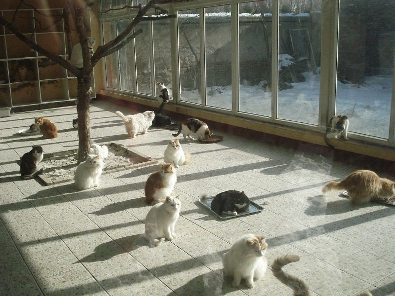

- About 3.4 million cats enter animal shelters nationwide every year. Approximately 1.4 of the 3.4 million adoptable cats face euthanasia.
- According to the ASPCA, less than 5% of cats who enter shelters are returned to their original owners, 37% of shelter cats are adopted, and 41% are euthanized.
- The ASPCA estimates between 74-96 million cats are companion animals in the United States.
- Fertile cats can produce one to two litters a year with anywhere from four to six kittens per litter.
- Male cats have a higher risk of urinary tract and kidney problems. They need plenty of cool, fresh water to help keep those systems healthy.
